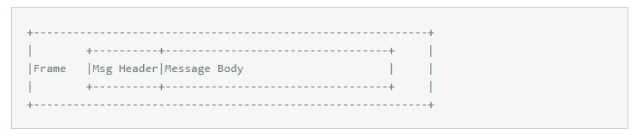

协议
编码解码，不得不再次搬出这个话题， 编码解码就是程序语言之间交流的语言！
一旦你适应了用粗暴的思考架设了你的设计， 再从头来会很难，一是你没有胆量推倒重来，二是没有时间，三是你没有耐心； 如果，反过来从最粗陋的底层开始， 倒有可能雕琢出更加精致的上层建筑！
撇开一堆高大上的RPC、分布式等等上层建筑，如何编码解码是个最基础的环节，在自己进程内，怎么交流都无障碍， 就好比大家都是中国人，都在说汉语，基本能够理解你说话的意思.
但凡需要跨进程，就需要编码解码你的信息， 不管是同一个还是不同语言； 这就比方你需要和一个吼达不到的人交流，你需要电话，或者书信来传递。 这里首要做的事情就是， 把你要表达的意思，转换成书信、电流信号；如果转换的言不达意，再好的通道也是鸡同鸭讲。
在计算机的世界里面你将收获一堆乱码！ 解编码，就是程序之间通讯的一道巴别塔：

程序之间的交流和任何信息的交流过程其实都一样， 上面说对面讲话如同进程内通讯，其实还是不太精确，任何即使面对面的对话，其实都是有解编码过程，你脑子里面想的电信号，驱动你发音系统产生气流的震动，通过空气传递到对方，对方的听觉系统把震动转换成电流信号，给大脑皮层理解。
概要¶
我们想要的解编码协议需要满足：
- 够傻够呆， 字节码打出来，即使你用笔手动算也能算出来
- 跨语言，小到内部系统之间交流， 大到对外APP, 客户端是个程序给个套路就可以解析
- 够小，不能臃肿如XML 等之类，但是无需为了个把字节问题影响标准 1
- 够快，够快才能显示我们的优势，同理不能为了快影响标准 1
满足上面几点的其实很难， 因为大部分不能满足要求 一； 确实如此，这个犹如时间、成本、质量铁三角或者 CAP 一样难以都满足。

其实很简单， 所有的项目、工具、套路最终都是个权衡，权衡和取舍！首先你不是什么消息都需要交流， 对交流的内容和范围做限制和取舍， 可以很容易满足上面的几点。 大部分的IT 项目其实为了那 20% 甚至 5% 的功能，占据80%以上的代码， 贡献了绝大部分的BUG. 程序因人而生，但是公平的对待程序和自己可以省掉很多的麻烦，需要和外围通讯的消息需要满足：
- 绝大部分是 primitive 类型： 这个好理解， primitive 所有语言解释套路一致，歧义少！
- 字段定长
- 如果实在需要个类似string 呢？ 很简单定长， 8/12/16/24/36/48 随便你选， 超过这个呢，对不起，走其他通道。
- 少group 属性
- group 也就是属性是个列表(list)， 列表给整个消息带来不确定性。于是少设计列表属性，能拆分就拆分， 不能拆分说明你业务模型有问题。
有人说这样一分其实很简单， 用个基本的分隔符，就可以把消息编解码出来， 你说对了，用个竖线( | ) 或者逗号(,)，从笔者角度确实是个非常非常不错的选择，紧凑、好懂，非常完美的满足上面的四点， 而且部分十分微小的消息这样处理非常好用。
经过如此筛选，最终可能上百个消息，最后剩下几十个，最后带group 的只有区区数的过来的几个。 OK 了下面的选择就比较宽泛 容易了。
FIX¶
最初对FIX 我是抗拒的，程序员容易犯的错误，是对一些古老、或者不时髦的东西有偏见，会一直以为最新的东西才是最NB, 最cool, 会了面子上过得去。但是这个协议是如此的简单和健壮，已致他一直被金融界广泛的使用，参考下文有介绍，Key+Value+SOH(分隔符，字节码 1 ) 其实就是这个协议的全部；什么狗日的 hack 帮我省那十来个字节没有的， 比较完美符合标准； 对，其实我们在内部也大胆的使用了FIX 作为通讯协议， 如和 websocket 客户端交流， 我们也使用此风格消息进行交互。 看到 LOG 一窜窜漂亮的K=V 打印出来，有种赏心悦目的感觉！
SBE¶
SBE Simple Binary Encoding, 听到这个词就有种对眼的感觉， Simple 多谦虚直白的表达方式，中文的SB编码又有点气吞山河如虎的傲娇！ 读罢，果然简单直接！ 好帅真的一个协议。 SBE 设计准则 , 我就不一一翻译，直接COPY Jdon 翻译：
- Copy-Free：不采取中间缓冲，因为其在多次字节复制中有性能损耗。采取直接与底层缓冲编码与解码，其限制是消息大小不能超过传输缓存的大小，可以进行碎片分段。
- Native Type Mapping：copy-free的设计也通过将数据直接编码为底层缓冲的原生类型中得到巨大好处，比如一个64位整数型能直接作为x86_64 MOV汇编指令被编码进入底层缓冲。通过这种原生的类型映射，一个字段能够以类似高阶语言如C++/Java中class类似和struct字段一样高效率访问。
- Allocation-Free：对象的分配会导致CPU缓存流失从而降低效率，这些被分配的对象后来得收集并删除，对于Java是使用垃圾回收机制，导致stop-the-world暂停。SBE编码采取flyweight 模式，基于底层缓冲的flyweight窗口直接对消息编码与解码，相应类型的享元是基于消息头部模板id选择的。
- Streaming Access：现代内存子系统已成为愈加复杂，该算法能够对性能和一致性有很大帮助，实现最好的性能与最一致的延迟，这是以一种上升顺序方式访问内存的方式实现的，也就是一种流。
- Word Aligned Access：当word以非word大小边界访问时，多CPU架构表现出显著性能问题，一个word的起始地址应该是其以字节为单位大小的倍数，64位整数只能从字节地址能被8整除的地方开始，32位整数只能从被4整除的字节地址开始。
简单粗暴， 是我个人对SBE 最直接的感受， 但是好用！
SBE 一个消息（Frame）包含哪些内容：
在HTTP中涉及久了大家基本都记得一些这样的图形， 基本就是个header + payload 设计手法：
当然SBE 属于第六层 (OSI)， 也就是表示层（Presentation Layer）， 最终还需要上面的应用也就是你的业务逻辑层来处理这些数据的。
Header 保持简单， 只保留最最基本的信息， 或者你消息路由里面需要的信息， 避免解析整个消息流。
<composite name="messageHeader">
<type name="blockLength" primitiveType="uint16"/>
<type name="templateId" primitiveType="uint16"/>
<type name="schemaId" primitiveType="uint16"/>
<type name="version" primitiveType="uint16"/>
</composite>
这样的header 占据8个字节的长度， 包括信息：
- blockLength: payload 的长度
- templateId: 消息模板， 哪种类型消息， 编码解码需要对象的解码编码器。
- schemaId： 属于哪个 schema 比如和FIX 哪个兼容
- version： 整个是你消息的版本， 建议不适用，如果消息变了，本人更趋向创建个新的类，即使加上个V1..N 也可以。
对于最简单的消息：
<sbe:message description="Internal Time Price" id="916" name="Price" semanticType="Price">
<field id="1" name="product" presence="required" type="VARCHAR12"/>
<field id="2" name="bid" presence="required" type="double"/>
<field id="3" name="ask" presence="required" type="double"/>
<field id="4" name="timestamp" presence="required" type="int64"/>
</sbe:message>
product 是一个12长度的字符串， 然后是一bid 和 ask 报价， 然后是一个epoch 时间戳。 可以看到这个对象的固定长度是 ： 36+8 = 44 字节， 固定长度消息。 比如对于bid 字段:
offset 为 header offset 也就是8个字节 + 前面的 product 12， 也就是bid 偏移是 20
编码
buffer.putDouble(offset + 12, value, java.nio.ByteOrder.LITTLE_ENDIAN);
解码
buffer.getDouble(offset + 12, java.nio.ByteOrder.LITTLE_ENDIAN)
是不是好舒服， 用笔都可以算出来。一个协议简单到这个程度也令人咂舌， 好就好在这个协议没有完备的周边设施，个人理解这个是弊端也是好处！弊端不是拿过来就用， 好处是给实现的人留下很多的空间， 而很多的协议都是全家桶， 周边都帮你实现， 一旦出现乱子， 你再去扒拉，非常的艰难。
一旦你适应了用粗暴的思考架设了你的设计， 再从头来很难，一是你没有胆量推倒重来，二是没有时间，三是你没有耐心； 如果，反过来从最粗陋的底层开始， 倒有可能雕琢出更加精致的上层建筑！
实践¶
上面说的基本就是SBE 全部， 和他的一个 GIT版本 , 其实这个项目不能说实现，因为SBE 和FIX 一样太简单了， 这个项目仅仅是个TOOL, 生成了最基础的几个语言的 stub, 和你 application 层美好的结合还需要自己去实现！
首先和你底层通讯框架集合起来（RPC, MQ 等）， 然后和你的业务bean结合起来。 现在的RPC， 或者MQ 框架都有plugin 进自己的 codec 实现， 好说， 但是和自己业务bean 结合起来就比较麻烦.
你不能decoder/encoder 这些 stub 类往你业务层传啊， 这个薄的一层非常的让人苦恼。 必须要自动代码生成一些伪类， 有这些自动生成的类有：
- Adapter: 反射封装encoder/decoder get/set 之类
- Enum： 映射， 这个比较暴力就switch case
- Stub: 分两种其实如果你需要 Lazy 模式，生成一个业务bean 伪类，覆盖get方法， 对group 这里需要特别对待， 如果是 Eager 模式不需要使用伪类，直接 adapter 中 解码new一个然后 get/set 上去。
- 反射，由于SBE 是基础XML， 自开发一套annotation, 方便一次扫描出来！
由于以前我们一直使用kryo序列化方式，效率和压缩比还是不错， 但是对其他语言不兼容，换成 SBE 后对于一些小消息，由于有头（部分头不止8字节长度，Domain 消息有29字节长度），还有对于optional 字段其实 SBE 也要占空间， 所以消息的大小没有多大的优势，但是解码编码还是飞快不少！
特别是如果你根据消息的ID 也就是 tempalteId 做路由可以说非常快，记得你的 templateId 固定位置， 直接截取byte 相关位置就可以路由了。
在 二代 版本中， SBE 仅在小规模范围使用， 80% 被ProtoBuffer 替换。比较通用性好点点。考虑外围系统开发的难度。